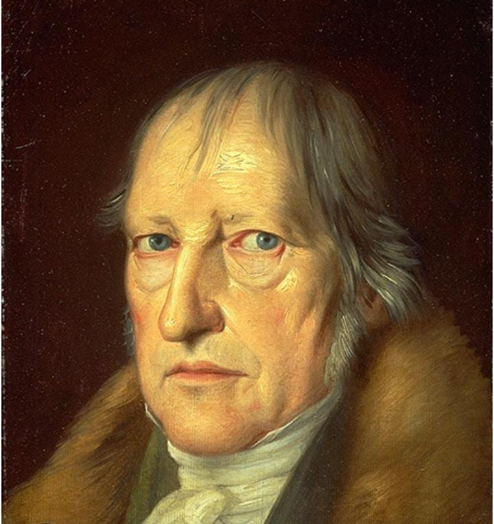

Georg Wilhelm Friedrich Hegel fue un filósofo alemán nacido el 27 de agosto de 1770 en Stuttgart, Ducado de Württemberg. Es considerado uno de los pensadores más influyentes de la historia, especialmente en la filosofía alemana idealista.
Infancia y educación
Hegel nació en una familia de funcionarios públicos. Su padre, Georg Ludwig Hegel, era un consejero de gobierno. Estudió en el Seminario de Tubinga, donde conoció a Friedrich Schelling y Friedrich Hölderlin.
Carrera
- 1793-1801: Tutor privado en Berna y Frankfurt.
- 1801-1805: Profesor en la Universidad de Jena.
- 1808-1816: Director del Gimnasio de Núremberg.
- 1816-1818: Profesor en la Universidad de Heidelberg.
- 1818-1831: Profesor en la Universidad de Berlín.
Obras principales
- "Fenomenología del Espíritu" (1807)
- "Ciencia de la Lógica" (1812-1816)
- "Enciclopedia de las Ciencias Filosóficas" (1817)
- "Lecciones sobre la Filosofía de la Historia Universal" (1822-1831)
- "Lecciones sobre Estética" (1820-1829)
Pensamiento
Hegel desarrolló la dialéctica, un método para comprender la realidad como un proceso de contradicciones y síntesis. Su concepto de "Espíritu Absoluto" describe la realidad ultimate como una conciencia autoconsciente.
Influencia
Hegel influyó en corrientes como:
- Idealismo alemán
- Marxismo
- Existencialismo
- Fenomenología
- Hermenéutica
Muerte
Hegel murió el 14 de noviembre de 1831 en Berlín, debido a una epidemia de cólera. Su legado continúa siendo fundamental en la filosofía contemporánea.